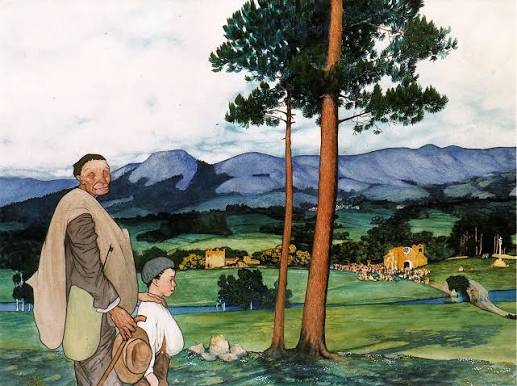

Debuxos e faceta artística de Castelao
Castelao foi un artista polifacético, e a súa faceta como debuxante e ilustrador é unha das máis destacadas. A través dos seus debuxos, Castelao expresou as súas ideas políticas, sociais e culturais, así como a súa visión da realidade galega.
Humor e crítica social
Os debuxos de Castelao, complementados con textos, mostran a Galicia agraria e caciquista mediante personaxes populares, labregos e mariñeiros, xentes pobres do campo, cegos e desamparados. As ilustracións transmiten o sufrimento que estes padecen, baixo un punto de vista crítico e realista, mais sempre cun toque de humor.
Álbums e ilustración
Unha das facetas máis destacadas de Castelao foi a creación de álbums ilustrados, nos que combinaba debuxos e textos para transmitir mensaxes de carácter social e político. Entre eles destaca Nós, publicado en 1931, unha colección de ilustracións que retrata a realidade galega e denuncia as condicións de vida das clases máis humildes.
Nas súas ilustracións empregaba un estilo sinxelo, expresivo e facilmente recoñecible. A combinación de imaxe e palabra permitíalle transmitir emocións e denunciar situacións de inxustiza dun xeito directo, convertendo o debuxo nunha importante ferramenta de compromiso social.

